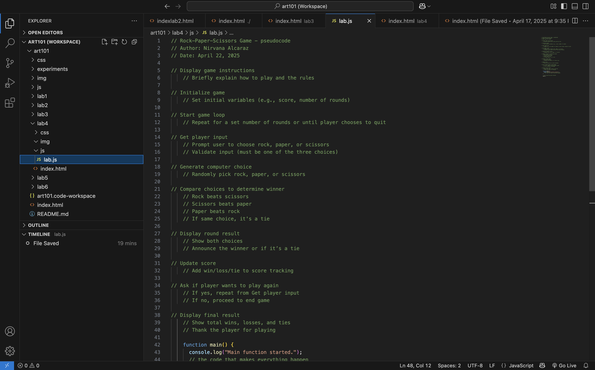

Lab 4 - pseudocoding & problem-solving
Lab Description
In this lab, we practiced writing pseudocode and translating it into JavaScript comments. This helped us plan out a simple computer game—Rock, Paper, Scissors—before writing any actual code. It emphasized the importance of logical thinking and structuring a program step by step.
Challenge
one of the challenges I faced was trying to attach my javascript file onto my lab4 index.html file.
Problems
One problem I ran into was forgetting to link my JavaScript file properly in the HTML. At first, nothing was showing up in the browser console, and I couldnt figure out why my `console.log()` statements werent working. After checking my code, I realized I had a typo in the file path for the script tag. Once I corrected the path to point to the right location, everything started working.
Reflection
This lab showed me how helpful it is to plan with pseudocode. It made coding feel more organized and less confusing.Results
Results
Here are my results
This is the pseudocode I created for a simple Rock-Paper-Scissors game:
// Rock Paper Scissors Game pseudocode // Author: Nirvana Alcaraz // Date: April 22, 2025 // Display game instructions // Briefly explain how to play and the rules // Initialize game // Set initial variables (e.g., score, number of rounds) // Start game loop // Repeat for a set number of rounds or until player chooses to quit // Get player input // Prompt user to choose rock, paper, or scissors // Validate input (must be one of the three choices) // Generate computer choice // Randomly pick rock, paper, or scissors // Compare choices to determine winner // Rock beats scissors // Scissors beats paper // Paper beats rock // If same choice, it's a tie // Display round result // Show both choices // Announce the winner or if its a tie // Update score // Add win/loss/tie to score tracking // Ask if player wants to play again // If yes, repeat from Get player input // If no, proceed to end game // Display final result // Show total wins, losses, and ties // Thank the player for playing